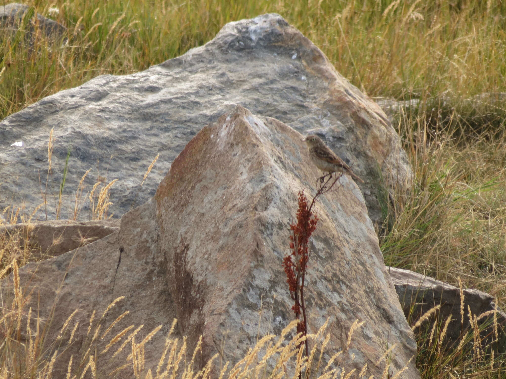
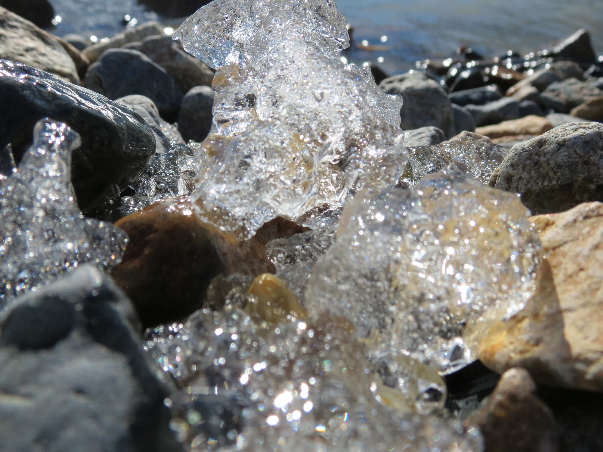

Encuentros

Encuentros Experimentales
En los encuentros experimentales de Arteterapia, la temática varía al igual que el uso de las diversas técnicas (escrituraterapia, musicoterapia, danzaterapia, pintura y dibujo, entre otros). Son espacios sagrados de transformación, de disfrute, de liberación de miedos, de desbloqueos en nuestra expresión creativa y de escucha activa. En ellos se genera intercambios de perspectiva, reflexiones, investigación individual y acompañamiento grupal, donde lo importante es el viaje de investigación más que el resultado final y/o estético de la obra artística que manifestemos. Son grupos reducidos y pueden ser a distancia o presencial. Duración 2hs.

Charlas
Las charlas son informativas e introductorias a las técnicas que brindo. Así como también pueden ser de temas específicos que, según mi perspectiva, son importantes compartir desde la experiencia y sabiduría individual hacia lo colectivo. Son encuentros grupales y pueden ser presenciales o a distancia. Duración: 1.30hs aproximadamente.
